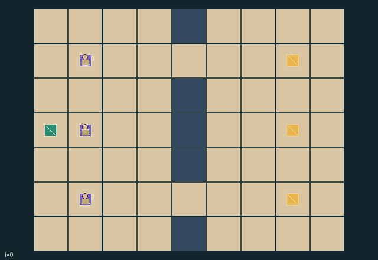

GI134 · Tide Ledger: Salvage Claims

Deliver three salvage lots through shared bottlenecks. Individual delivery values compete with auction costs; every delivery also benefits all three salvagers.
Identity and original contract
3 independently actionable roles; 11 discrete commands per role; 64 native observation columns per role; original horizon 64 steps. Declared per-step reward range: -3 to 12. Observation regime: partially_observable.
Source SHA-256: 22d1dc5fbcc3633ea3cf707b9815b2aac03c8aced58f88d5177a7e0d6c0d0e6f
The objective, rewards, population, map and horizon remain original. A preview is not a success claim.
Objective and gameplay
Deliver three salvage lots through shared bottlenecks. Individual delivery values compete with auction costs; every delivery also benefits all three salvagers.
Public escalating bids determine exclusive claims and token payments. Agents physically obstruct routes, can release/drop claims for partners, and lose uncollected exclusivity at deadlines.
- Three two-tick auctions happen before movement. A bid can only rise to 1, 2 or 3 within the bidder's private remaining budget.
- The highest positive bid wins at closure and only the winner pays. Equal bids rotate priority by lot: 0,1,2 then 1,2,0 then 2,0,1.
- Carry one lot, respect its unexpired exclusive claim, and bring it physically to the depot. Walls and other salvagers obstruct routes.
- Uncollected claims expire at clocks 28, 32 and 36. A carrier keeps possession. Release a ground claim without refund or drop cargo for a later handoff.
- Delivery pays the deliverer's private value and gives everyone 1. Finishing all lots gives everyone 2. Auction payment is a negative reward to its payer.
- Only your own purse and value card are visible in role view. Public commitments, claim markers and physical positions are native game state.
Ending: All three lots delivered. Otherwise truncate at 64 steps; natural completion has priority on step 64. Terminal raw calls are absorbing.
Action timing: Auctions occupy input t=0..5, two ticks per lot. Only wait/strictly increased affordable bid are legal then. Physical actions start at t=6. Input-state mask is applied before transition; movement attempts resolve against walls, old occupants and destination contention. There are no swaps/following. Claim expiry and release precede pickups but a newly available pickup may need the next input mask. Invalid or masked actions become wait.
First complete six auction steps (input t=0–5). Physical movement starts at t=6; the keyboard cannot bypass this phase.
What this game explores
Information, sensing & communication: Who knows a fact, when it was measured, and whether it was communicated are separate state variables. Test memory or communication using only the same role-visible evidence.
Commitment, exchange & governance: Promises consume time, liquidity, access or material. Separate an announced agreement from a binding commitment and from its eventual delivery; log cancellation and expiry too.
Joint transport & shared access: Positions, load geometry, occupancy and persistent access constrain whose action can succeed next. Distinguish physical handoff, shared controls and simultaneous force from a cosmetic cooperation label.
These are questions supported by rule structure, not observed learning effects.
Play it: operating walkthrough
crucibles play --game gi134Keep Python running and open its printed address. Select this game, set a seed and press Create session. The game itself is always English.
Assign a role range to Host with Assign / take over, or Assign all roles. Invite a second participant with Create player invitation, then assign a disjoint subset. Every original role is available.
For every owned role choose a legal command and press Queue. Arrow keys / WASD queue a declared directional action for the current role camera when available. Space or Advance one joint step advances everyone together. Non-directional games use the selectors.
Unqueued roles use the labelled untrained uniform-legal policy. Take over or release roles before the next step without resetting. Full-state debug is privileged and permanently logged; role cameras preserve permissions. Close the session to retain logs. Server restart does not restore sessions.
Complete command reference
IDs and English labels exactly match the manifest. Availability depends on role, resources, location and phase. An available action can still have no productive effect.
0·Wait
1·Attempt north
2·Attempt east
3·Attempt south
4·Attempt west
5·Pick up eligible salvage here; deliver carried salvage at depot
6·Commit bid 1 on current lot
7·Commit bid 2 on current lot
8·Commit bid 3 on current lot
9·Release lowest-index owned uncarried claim without refund
10·Drop carried salvage here
Roles and capability identifiers
These original role names describe capabilities, not interchangeable skins. Check each owned role's legal selector before planning handoffs.
agent_0·Salvager 0: private valuations and token reserve
agent_1·Salvager 1: private valuations and token reserve
agent_2·Salvager 2: private valuations and token reserve
Information and observation permissions
Public fixed yard layout, agent/object positions, commitments, claims, deadlines and event flags. Each role alone receives its own budget and valuation row. Private cards use identity visibility. Initial total tokens and other roles' private budgets/values are not policy observations.
The GIF is full-state debug and may reveal hidden entities or private state. Train on obs[agent], not the picture, state tree or another role's private row. Field slices and visibility are in the original manifest.
Reinforcement-learning integration
import jax
from crucibles_jaxmarl import make
env = make("gi134")
key = jax.random.PRNGKey(0)
key, rk, ak, sk = jax.random.split(key, 4)
obs, state = jax.jit(env.reset)(rk)
actions = env.sample_actions(ak, state)
obs, state, rewards, dones, info = jax.jit(env.step_env)(sk, state, actions)
done = dones["__all__"]Observations are float32 vectors of width 64; actions are scalar int32; masks have 11 entries. Supply all 3 roles each transition. Masked sampling is an engineering reference, not a trained learner.
step_env retains terminal data without reset. step performs outer autoreset and keeps terminal data in info["raw_state"] and info["raw_observation"]. Use dones["__all__"] for episode boundaries; separate completion, failure and time limit in analysis.
JIT or vmap equal identities and shapes. Split independent reset, policy and transition keys. Group different shapes explicitly; do not shrink the population or horizon. Host rendering stays outside training.
Training questions and fair evaluation
Define valid completion from the objective before fitting. Preserve original rewards and also report real deliveries/services, losses, resource state, unresolved episodes and per-role returns. Animation is not a reward signal.
Who knows a fact, when it was measured, and whether it was communicated are separate state variables. Test memory or communication using only the same role-visible evidence.
Promises consume time, liquidity, access or material. Separate an announced agreement from a binding commitment and from its eventual delivery; log cancellation and expiry too.
Positions, load geometry, occupancy and persistent access constrain whose action can succeed next. Distinguish physical handoff, shared controls and simultaneous force from a cosmetic cooperation label.
Compare memory, communication or centralized critics under matched actor information. Declare critic access; keep actor inputs role-filtered. Match partner/opponent distributions, masks, compute and checkpoint selection. Final tests never enter fitting or selection.
Independent training runs or source-pairing blocks are inferential units; episodes from one policy are not independent training replications. Save hashes, keys, versions, device, time and cost. Negative, zero, failed and indeterminate outcomes are valid. No trained checkpoint or target score is supplied.
Classification and evidence
Overlapping editorial labels are reading aids, not proof of novelty, difficulty, strategic equivalence or learning effects.
- Information, sensing & communication
- Evidence
manifest.task.observation_access: Public fixed yard layout, agent/object positions, commitments, claims, deadlines and event flags. Each role alone receives its own budget and valuation row. Private cards use identity visibility. Initial total tokens and other roles' private budgets/values are not policy observations.
- Evidence
scene.rules.0: Three two-tick auctions happen before movement. A bid can only rise to 1, 2 or 3 within the bidder's private remaining budget.
- Evidence
scene.rules.4: Delivery pays the deliverer's private value and gives everyone 1. Finishing all lots gives everyone 2. Auction payment is a negative reward to its payer.
- Commitment, exchange & governance
- Evidence
manifest.task.objective: Deliver three salvage lots through shared bottlenecks. Individual delivery values compete with auction costs; every delivery also benefits all three salvagers.
- Evidence
manifest.task.interaction: Public escalating bids determine exclusive claims and token payments. Agents physically obstruct routes, can release/drop claims for partners, and lose uncollected exclusivity at deadlines.
- Evidence
manifest.task.observation_access: Public fixed yard layout, agent/object positions, commitments, claims, deadlines and event flags. Each role alone receives its own budget and valuation row. Private cards use identity visibility. Initial total tokens and other roles' private budgets/values are not policy observations.
- Joint transport & shared access
- Evidence
manifest.task.objective: Deliver three salvage lots through shared bottlenecks. Individual delivery values compete with auction costs; every delivery also benefits all three salvagers.
- Evidence
manifest.task.interaction: Public escalating bids determine exclusive claims and token payments. Agents physically obstruct routes, can release/drop claims for partners, and lose uncollected exclusivity at deadlines.
- Evidence
manifest.actions.5: Pick up eligible salvage here; deliver carried salvage at depot
Source, receipts and preview limits
The world-only English GIF replays saved untrained legal actions through the original kernel. At most 25 actual endpoints include initial and terminal state; no invented interpolation. It is full-state debug, not the role observation.
Original source, observation slices, manifest and mechanism
Native receipt · Presentation receipt
Engineering passes do not establish learning. Nonzero floating differences remain recorded and undetermined; no new tolerance was introduced. Human scores remain unverified.